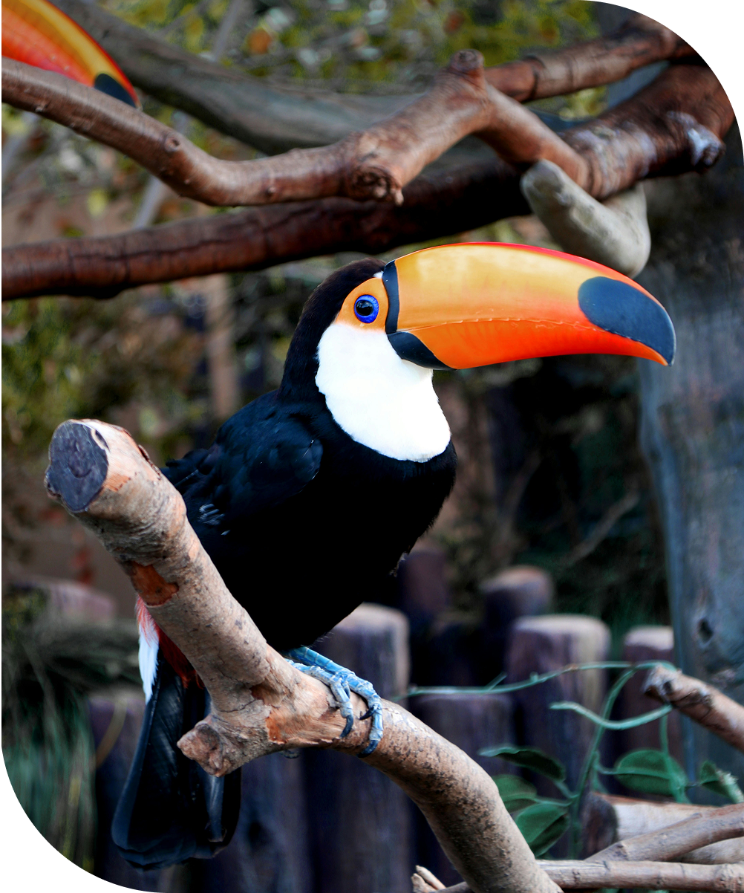

Sobre os Tucanos
Os tucanos são aves tropicais conhecidas pelo visual vibrante e pelo bico de formato único. Pertencem à família Ramphastidae e estão entre as aves mais emblemáticas da América do Sul. São animais sociáveis, que vivem em bandos pequenos, alimentam-se principalmente de frutas e têm um papel fundamental na natureza: ajudam a espalhar sementes, contribuindo para a regeneração das florestas. Além da importância ecológica, chamam atenção pela beleza e pelo comportamento curioso.